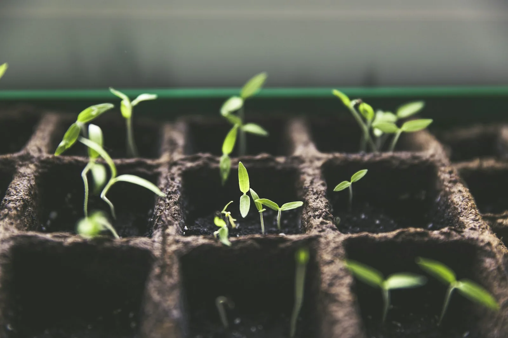
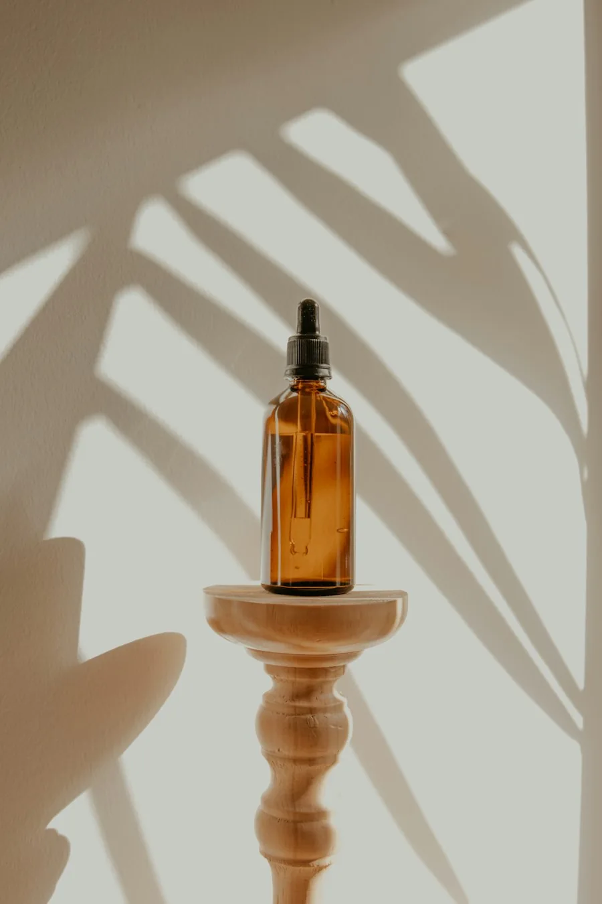

01 /
Specialized consultation
Care that starts with you.
Appointment-based consultations with Ayurvedic physicians, centered on your health history, concerns, and individual care needs.
Enquire about this serviceGenerations of wisdom. A deeply personal approach.
Experience a tradition of care that has grown with our community for over 100 years.
A tradition begun in 1920
Prescribed medicines, clinic-dispensed
Separate Panchakarma treatment spaces
Fresh herbs for selected formulations

THE WISDOM OF A CENTURY
From Adharsha Chikitsalaya in 1920 to Ayushman today, our story is a continuous thread of Ayurvedic care.
Recognized in the center’s history as Kakinada’s oldest existing Ayurvedic hospital, Ayushman carries forward a tradition shaped by generations of physicians. Today, specialized consultations, Panchakarma, our in-house dispensary, and fresh garden-grown herbs bring that heritage into everyday care.
OUR JOURNEY / 1920 — TODAY
Explore the people, places, and defining moments behind Ayushman.
Select a chapter to explore its story.Established in 1920 by Late Jatavallabhula Lakshminarayana Sastry, Ayurveda Acharya & Ayurveda Visarada, as Adharsha Chikitsalaya. The clinic operated under this name until 1976.
The center transitioned to SILA Clinic under Chief Physician Late Dr. J. Krishnamurty (MBBS), who continued his dedicated service until August 2022.
Dr. Sastry re-established Ayushman Ayurvedic Centre on 22 July 2007. The Panchakarma Centre opened on 22 August 2008 with Dr. Shahzad Ali.
Historical expansion milestones; contact the Kakinada center for current locations.
Dr. J. Krishnamurthy maintained stewardship of the center through this period, continuing its tradition of patient care.
On 22 April 2022, the center expanded into an advanced Panchakarma unit with separate male and female wings at Door No. 25-06-35.
Physicians serving this chapter include Dr. Hema G. and Dr. Suresh Naidu. Dr. Swetak Majeti joined in 2023 and is on postgraduate study leave in Shalya Chikitsa.
Joined in 2024–25 · Regularized March 2025
THE AYUSHMAN APPROACH
Four connected pillars of care.
One deeply rooted philosophy.
Specialized consultation
Appointment-based consultations with Ayurvedic physicians, centered on your health history, concerns, and individual care needs.
Enquire about this servicePanchakarma therapy
A full-fledged Panchakarma unit with separate male and female wings and qualified male and female therapists.
Enquire about this service
03 /In-house dispensary
Prescribed medicines are dispensed directly from the clinic’s own pharmacy, supporting consistency and avoiding discrepancies between outside pharmacies.
Enquire about this serviceGarden-to-clinic formulations
Selected formulations are prepared using fresh medicinal plants grown in Dr. Sastry’s private herbal garden—a close connection between cultivation and care.
Enquire about this serviceCULTIVATED WITH PURPOSE
Fresh medicinal plants from Dr. Sastry’s private herbal garden
connect our formulations to their natural beginnings.
YOUR NEXT CHAPTER
Visit us in Kakinada.
Let’s find your next step, together.
Send your preferred visit details securely to the center. Your enquiry will be recorded for the clinic to review.
Panchakarma Unit: Door No. 25-06-35
Visits by appointment. Please call for current timings.